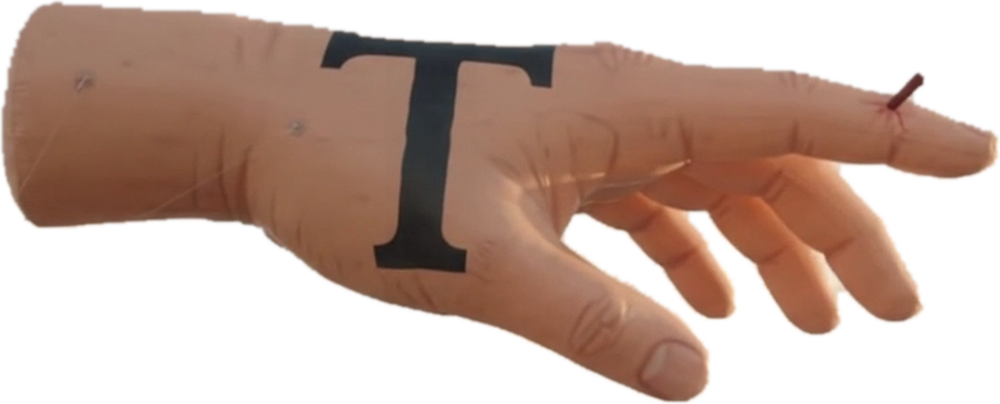

bit.ly/
PULLITOU
?

T
9 hands found.
1 still missing.
bit.ly/PULLITOUT
×
bit.ly/PULLITOUT
HAND pitch screen
Click once to turn sound on and go full screen.
Connecting to the phone remote…
→ start film · F full screen